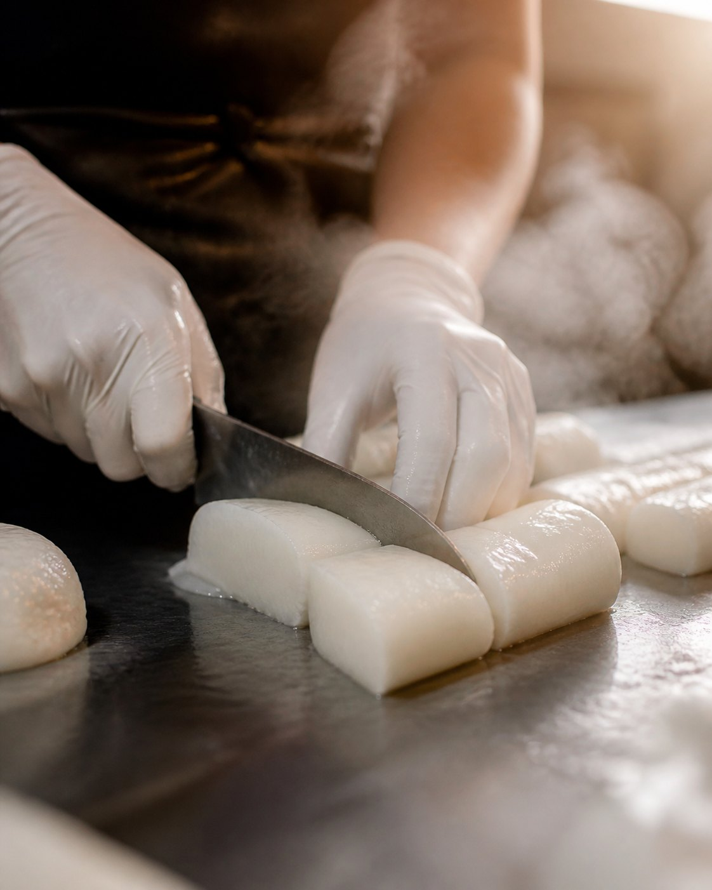
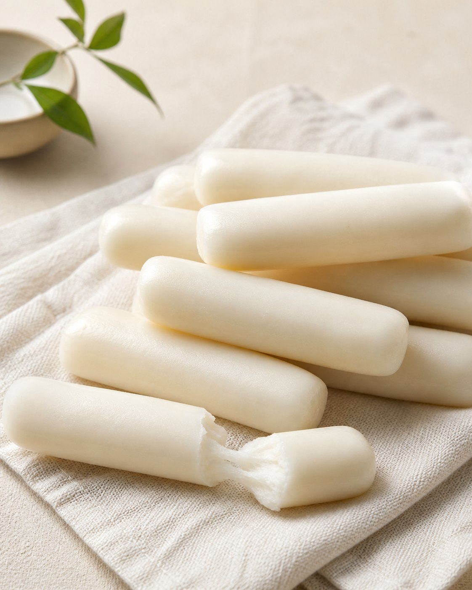
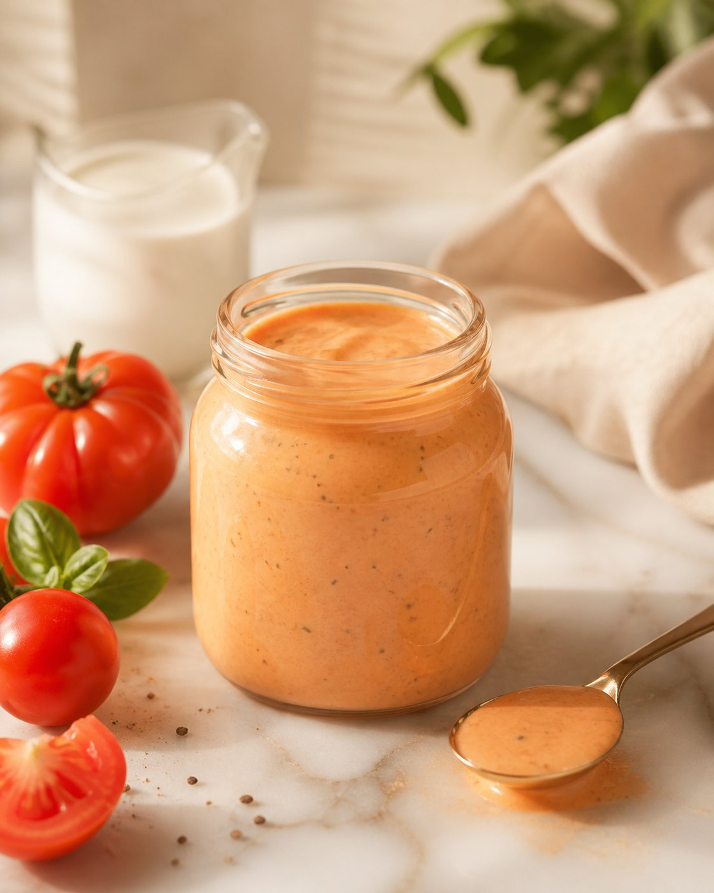
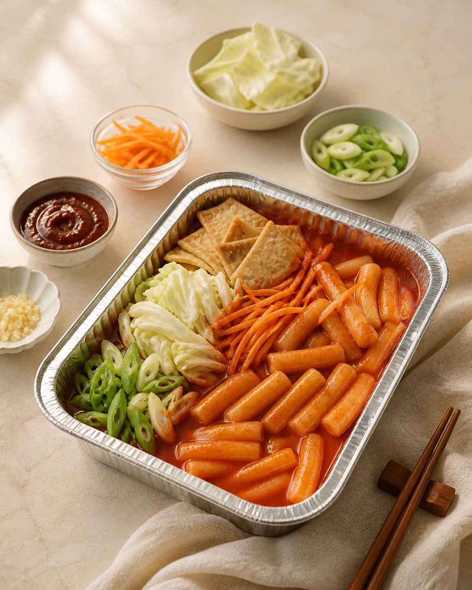

매일의 식탁을
가장 정직하게
1988년, 서울 외곽의 작은 떡 공방에서 시작했습니다. 좋은 원료를 고르는 일부터 출하 직전의 검사까지, 38년 동안 변하지 않은 기준이 있습니다.
회사소개 더 보기“담다”와 “온기”에서 이름을 가져왔습니다.
정성을 담고, 온기를 담아 매일의 한 끼를 만듭니다.
담온식품은 국산 쌀과 냉장 원료만 사용합니다. 반죽의 온도와 숙성 시간은 오늘도 손으로 확인하고, 생산동의 기록은 하루 단위로 남깁니다. 급식·프랜차이즈·유통까지 180여 곳의 거래처가 같은 품질을 찾는 이유입니다.
떡류 3개 라인, 면류 2개 라인, 소스 1개 라인. 연간 8,600톤의 생산능력을 갖춘 제2공장은 2019년에 문을 열었습니다.

1988년부터 이어온 제조
떡·면·소스 생산 라인
급식·프랜차이즈 거래처
연간 생산능력
떡에서 소스까지,
한 라인의 식탁
떡류·면류·소스·간편식까지 40여 개 품목. 급식·프랜차이즈·유통 채널에 맞춰 규격과 포장을 조정합니다.
전체 제품 보기
떡류
가래떡 · 떡볶이떡 · 인절미. 쌀 100%로 지키는 쫄깃한 식감.
Explore
면류
생면 · 우동 · 소바. 매일 아침 뽑아내는 신선함.
Explore
소스·간편식
로제 소스 · 밀키트. 매장에서 그대로 쓰는 베이스.
Explore




보이지 않는 곳까지
같은 기준으로
원료 입고부터 출하까지 4단계 검사. 담온식품의 생산동은 매일의 기록으로 관리됩니다.
원료 검수
국산 쌀과 냉장 원료만 입고합니다. 수분·아밀로스·이물 검사를 통과한 원료만 생산동으로 들어갑니다.
스마트 위생 생산
에어샤워와 전실을 거치는 2중 구역 설계. 작업자·설비·공기를 함께 관리합니다.
품질 검사
2시간마다 자주검사, 매일 완제품 관능검사. 금속검출기 0.8mm까지 확인합니다.
저온 유통
출하 즉시 0–4℃ 콜드체인. 입고 온도 기록은 10분 단위로 남습니다.

한결같은 기준
HACCP 관리 체계

오시는 길
방문 상담은 사전 예약제로 운영합니다. 생산동 견학은 위생 규정에 따라 안내드립니다.
- 본사·공장경기 남부 생산단지
상세 주소는 상담 시 약도와 함께 안내드립니다. - 상담 시간평일 09:00 – 18:00 (점심 12:00 – 13:00)
- 이메일hello@damonfood.example
- 방문 상담사전 예약 후 방문 (주차 안내)